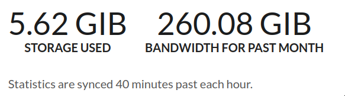

Like cargo build, but for your OS.
Brave New World
Infrastructure as Code
How you build your software?
git clone https://github.com/xxx/yyy.git
{stack,cargo,cabal,yarn,go,gradlew,sbt,mvn} {build,compile}
or maybe just
{python,lua,ruby,perl} xxx.{py,lua,rb,pl}
How you build your OS?
Digression
Entering nix flake
git clone https://github.com/contrun/dotfiles.git
cd dotfiles
nixos-rebuild build --flake .#x86_64-linux
Show it in action
nix build .#nixosConfigurations.x86_64-linux.config.system.build.toplevel
nix build .#nixosConfigurations.x86_64-linux.config.system.build.vm
nix path-info .#nixosConfigurations.x86_64-linux.config.system.build.toplevel -sSh
QEMU_NET_OPTS="hostfwd=tcp::2222-:22" ./result/bin/run-*-vm
ssh -o GlobalKnownHostsFile=/dev/null -o UserKnownHostsFile=/dev/null -o StrictHostKeyChecking=no -p 2222 e@localhost
Show off my PATH, systemctl status, i3wm, xmonad.
Three pillar of nix super power
I’ve just demonstrated packer + vagrant. Nix is far more powerful.
Reproducible
Like it solely from a git repo, with all desired packages, configurations.
Declarative
A minimalist language to do all those things, without diving into all the details.
Reliable
Easily roll back to the previous state.
Devil in the White City
Let’s see who you really are
nix build .#nixosConfigurations.x86_64-linux.config.system.build.toplevel
nix show-derivation
nix show-derivation $(nix build .#nixosConfigurations.x86_64-linux.config.system.build.toplevel --json | jq -r '.[0].drvPath') | jq -r '.. | .buildCommand? | select(.)'
Anatomy of a flake file
{
inputs.nixpkgs.url = "github:NixOS/nixpkgs/nixos-20.09";
outputs = { self, nixpkgs }: {
nixosConfigurations.container = nixpkgs.lib.nixosSystem {
system = "x86_64-linux";
modules =
[ ({ pkgs, ... }: {
boot.isContainer = true;
# Let 'nixos-version --json' know about the Git revision
# of this flake.
system.configurationRevision = nixpkgs.lib.mkIf (self ? rev) self.rev;
# Network configuration.
networking.useDHCP = false;
networking.firewall.allowedTCPPorts = [ 80 ];
# Enable a web server.
services.httpd = {
enable = true;
adminAddr = "morty@example.org";
};
})
];
};
};
}cd "$(mktemp -d)"
git init
git add .
nixos-container create flake-test --flake .
nixos-container start flake-test
curl http://flake-test/
cf Nix Flakes, Part 3: Managing NixOS systems
Anatomy of a nix derivation
See it in action
cat ~/Workspace/nixpkgs/pkgs/applications/misc/hello/default.nix
nix-shell '<nixpkgs>' -A hello
declare -f genericBuild
unpackPhase
Conclusion
- Wait, its always derivations
- stdenv to bootstrap toolchain
- setup.sh as a generic build process
- setup-hooks to inject processing logic
Key components
Nix, the language
- Purely functional Strictly separate effectful operations from pure functions. Make the exposure face smaller.
- lazy Make it easy to fill in the blanks later.
Nix, the interpreter
- Evaluate of nix expressions
- Execute impure effects, e.g. download dependencies, store file to the nix store
Nixpkgs, the package set
A large library of functions to build std derivations
buildPythonPackage, buildGoPackage, buildRustPackage, snapTools.makeSnap, lib.nixosSystem (thus nixos itself is nothing special)
A large library of nixos modules
kernel customization, zsh, emacs, xmonad
Some helper functions
fixed point calculation, string manipulation
The Perks of Being a Stoic
Me compiling, github microsoft crying
Don’t cray for me, github and cachix. cf https://github.com/contrun/dotfiles
Compiling

Github actions to build my packages
Cachix to cache my build results

nixos test
Integration tests
You have cassandra, pomerium, a blockchain. You are a distributed system hacker. You don’t emulate distributed system with seperated processes.
See it in action
nix-build ./nixos/tests/pomerium.nix
nix-instantiate --strict --eval -E 'with import ./nixos/tests/pomerium.nix {}; driver.outPath'
$(nix-instantiate --strict --eval -E 'with import ./nixos/tests/pomerium.nix {}; driver.outPath' | xargs)/bin/nixos-test-driver
backend.wait_for_unit("nginx")
backend.wait_for_open_port(80)
pomerium.wait_for_unit("pomerium")
pomerium.wait_for_open_port(80)
pomerium.succeed("curl --resolve my.website:80:127.0.0.1 http://my.website | grep -q 'hello world'")
Complex build environment
Cross compilation
You need to cross compile a package. I can haz a good cross compilation tool-chain without scratch my heads?
Static linking
You need to statically link programs, your program depends on some c library which your package manager does not pack static libraries, e.g. openssl, rocksdb, or the library is not static-linking friendly, e.g. glibc.
See it in action
go build -gcflags 'all=-N -l -m' -ldflags '-extldflags "-static"' ./cmd/ipvpnd/
ldd ipvpnd
nix-shell -E 'with import <nixpkgs> {}; pkgsCross.musl64.clangStdenv.mkDerivation { name = "clang-nix-shell"; }'
go build -gcflags 'all=-N -l -m' -ldflags '-extldflags "-static"' ./cmd/ipvpnd/
nix-build -E 'with import <nixpkgs> {}; pkgsCross.aarch64-multiplatform-musl.hello'
file ./result/bin/hello
qemu-aarch64 ./result/bin/hello
./result/bin/hello # courtesy for binfmt.emulatedSystems = [ "aarch64-linux" ];
Build farms
See the above nix-build -E 'with import <nixpkgs> {}; pkgsCross.aarch64-multiplatform-musl.hello'.
dev shells, direnv for projects
- Foreign libraries, openssl, rocksdb etc.
- Some projects even customize toolchains, scylla db
- Some projects are just monsters. Android. Chrome.
- Integrations, kernel, databases, caches (just use docker compose?), what about kernel integration?
- compilecommands.json PATH=“$HOME/.cache/bin:$PATH” dontUnpack=y dontInstall=y dontFixup=y src=. genericBuild
- Case study: stack
- Case study: direnv
- See it in action: nix
Atomic updates, Easy rollback
nixops
containers
Exciting Times
Nice-to-have improvements
Beginner-friendliness
- Learning curve
- Documentation
- Diagnostics
- Tooling
- Mirrors
Enterprise-grade applications
- Eco-system
- Professionalism
Versatility
- painless dev shell
- incremental build
- rootlessness
All your base are belong to us
devos
kubernix
nixops, deploy-rs
Build test in a isolated environment
Deploy software to a new environment